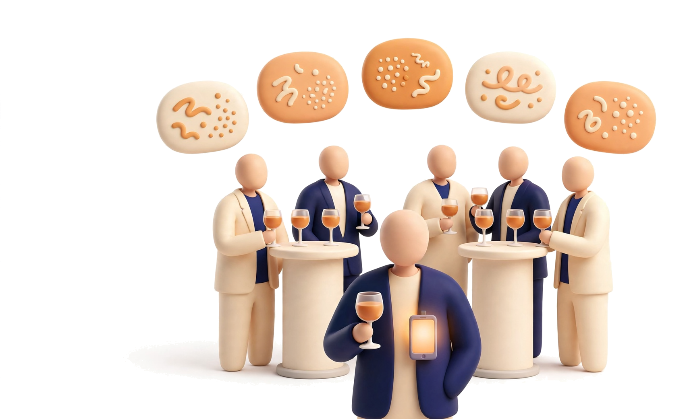
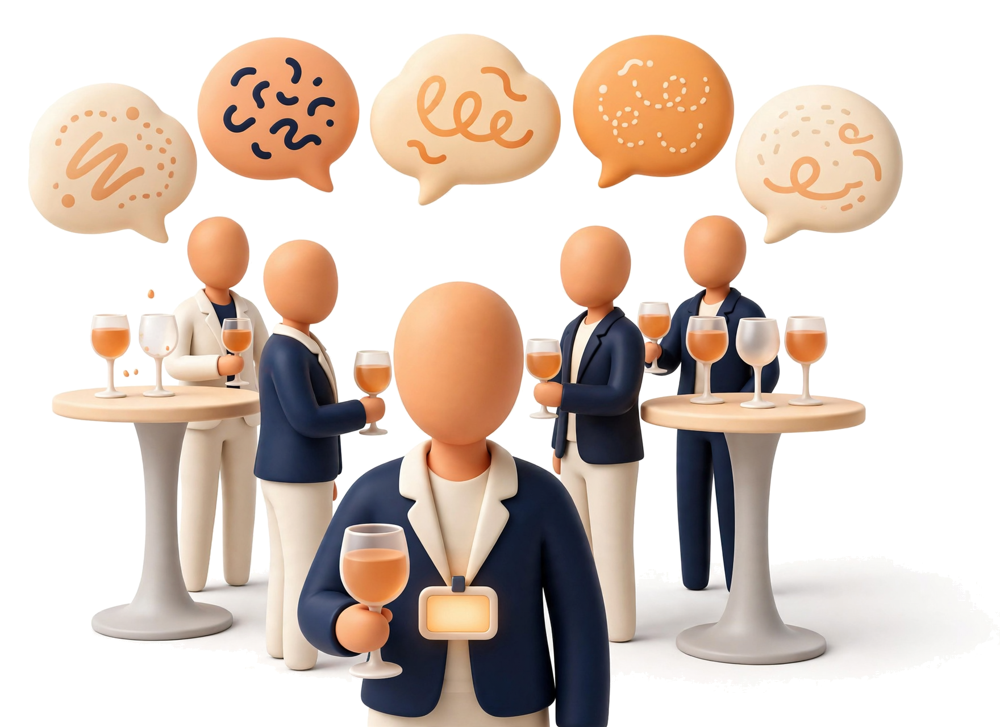
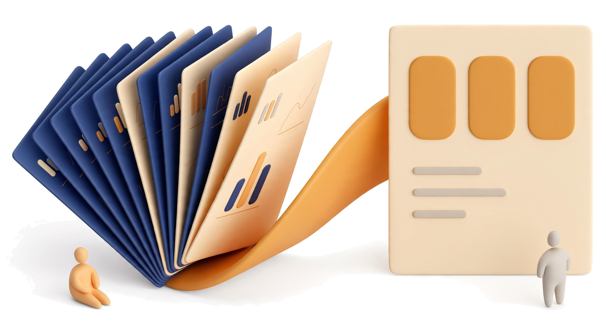

wearables that remember your day, boughtAmazon bought Bee (Jul 2025); Meta bought Limitless (Dec 2025)
Limitless users asked for a personal CRMstill unbuilt when Meta bought it (feature board, Dec 8, 2025)
AI note-takers on Product Huntat a mixer, you are still talking to "Speaker 2" (Oct 2026)
introduction to "met before"
names right across 12 accents
per edge-finder pass, Spark Open
server tests